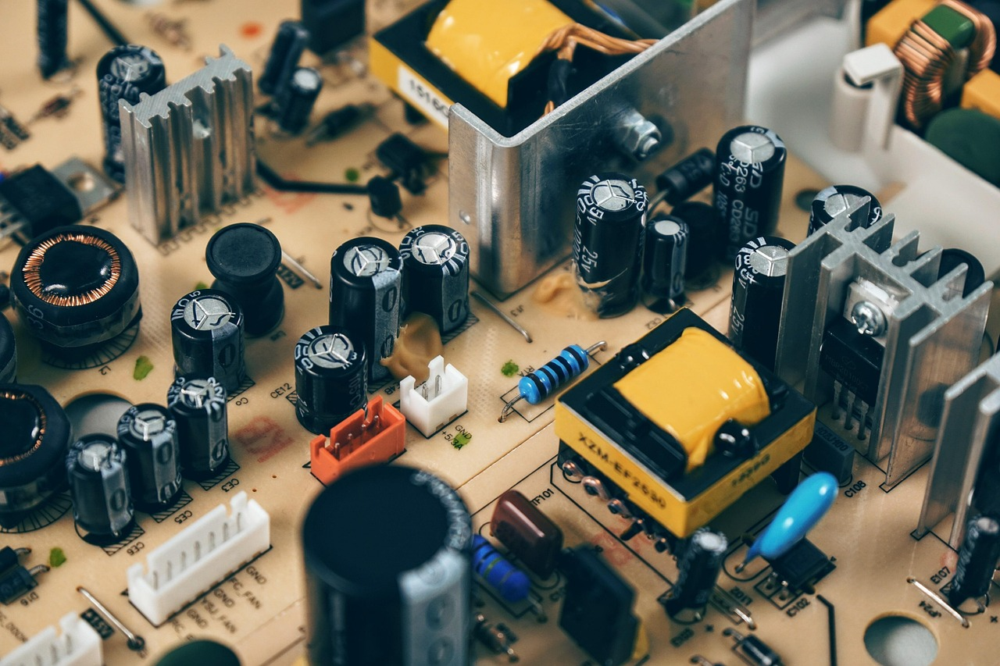

탄탈럼 납기 26주 고착, AI 팹 증설 실제 발목

탄탈럼 커패시터 납기는 2023년 평균 12~14주에서 2025년 현재 26주로 2배 이상 늘어났다. 이는 AI 서버용 전력관리 모듈과 ADAS 전장 기기 수요가 동시에 급증하면서 발생한 복합 병목이다. 탄탈럼 커패시터는 서버 1대당 평균 800~1,200개가 탑재된다.
탄탈럼 원광의 60% 이상이 콩고민주공화국(DRC)에서 생산되며, 글로벌 정제 가공은 독일 H.C. Starck(현 AMG Advanced Metallurgy)과 미국 Global Advanced Metals 2개사가 전체 공급량의 70% 이상을 통제한다. 이 과점 구조가 납기 연장의 실질 원인이다.
한국은 탄탈럼 커패시터를 삼성전기·아비코전자가 생산하지만 탄탈럼 파우더·잉곳 원소재는 100% 수입에 의존한다. 연간 수입량은 약 80~100톤으로, 납기 26주 고착 시 AI 데이터센터 증설 공기(工期)가 최소 2~3개월 지연되는 연쇄 효과가 발생한다.
2024~2025년 글로벌 탄탈럼 수요는 AI 인프라 투자 급증으로 전년 대비 18% 증가했으나, 공급 증가율은 4%에 그쳤다. 가격은 2022년 kg당 130달러에서 2025년 현재 210달러 수준으로 약 62% 상승했다.
탄탈럼 병목은 반도체 웨이퍼나 HBM처럼 언론이 주목하는 소재가 아니라서 거의 보도되지 않는다. 그러나 전력관리 IC(PMIC)와 서버 마더보드에 필수 탑재되는 탄탈럼 커패시터가 없으면 팹에서 칩을 만들어도 최종 조립이 멈춘다. 이것이 현장에서 실제로 확인되는 병목의 본질이다.
26주 납기는 팹 증설 계획을 세울 때 절대 무시할 수 없는 수치다. 통상 AI 데이터센터 장비 조달 리드타임을 16~20주로 잡는데, 탄탈럼 커패시터 혼자 26주를 요구하면 전체 공기가 이 소재 하나에 종속된다. 삼성전자·SK하이닉스가 HBM 수율 개선에 집중하는 사이, 하단 소재 레이어에서 조용한 병목이 쌓이고 있다.
H.C. Starck(AMG 산하)과 Global Advanced Metals는 현재 탄탈럼 정제 과점 지위를 유지하며 가격 결정권을 쥐고 있다. 이들의 마진은 2022년 대비 30% 이상 개선된 것으로 업계에서 추산된다.
호주 탄탈럼 광산 회사 Pilbara Minerals와 캐나다 Manitoba 지역 탄탈럼 광구 개발사들이 수혜 대상이다. 특히 호주는 DRC 대비 정치·물류 리스크가 낮아 미국·일본의 공급망 다변화 수요를 흡수하고 있다. 한국광물자원공사(KOMIR)의 호주 광구 지분 확대도 이 맥락에서 전략적 가치를 가진다.
삼성전기는 탄탈럼 커패시터 국내 최대 생산사지만 원소재 100% 수입 구조 탓에 납기 26주 고착 시 직접 원가 압박을 받는다. 2024년 삼성전기 컴포넌트 사업부 매출은 약 4.2조 원인데, 원소재 납기 연장은 재고 비용과 고객사 페널티 리스크를 동시에 높인다.
AI 데이터센터를 국내에 구축 중인 KT·SK텔레콤·네이버 등 하이퍼스케일러들은 장비 조달 타임라인 재설정이 불가피하다. 2025~2026년 예정된 국내 AI 팹 투자 총액 약 12조 원 중 탄탈럼 병목으로 인한 공기 지연 비용은 현장 추산으로 1~2% 수준, 즉 1,200억~2,400억 원 규모다.
AI 서버·전장 투자자는 탄탈럼 커패시터 납기 지표를 분기별로 추적해야 한다. 납기 26주가 30주로 늘어나는 순간 AI 팹 증설 타임라인 전체가 흔들린다. 현재 이 지표를 공개 발표하는 기업은 없으므로 삼성전기·아비코전자의 재고 회전율 변화를 대리 지표로 활용할 것.
소부장 기업 중 탄탈럼 파우더 가공 역량을 가진 회사는 사실상 국내에 전무하다. 정부 소부장 1700억 원 지원 프로그램에서 탄탈럼 정제·가공이 지원 대상 소재로 명시돼 있지 않다면, 이 공백은 수년 내 위기로 전환된다. 구매담당자는 지금이라도 2개 공급선(독일·호주) 이원화 계약을 체결해야 납기 리스크를 헤징할 수 있다.
실제 조달 현장에서는 — 탄탈럼 커패시터 바이어들이 26주 납기를 알면서도 단일 공급사 의존을 유지하는 이유가 '전환 인증 비용'이다. 신규 공급사 등록에만 6개월~1년이 걸리기 때문에 납기가 길어져도 기존 거래처를 유지하는 관성이 작동한다. 지금 당장 2순위 공급사 인증을 시작하지 않으면 다음 수요 급증 사이클에서 똑같이 발목을 잡힌다.
이 포스팅은 쿠팡 파트너스 활동의 일환으로 수수료를 제공받습니다.